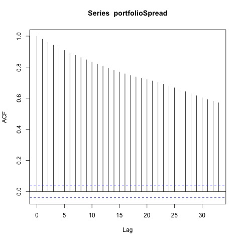
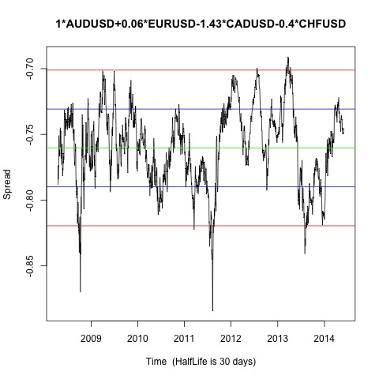
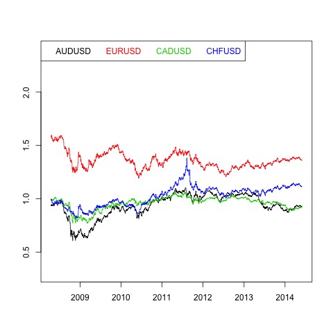
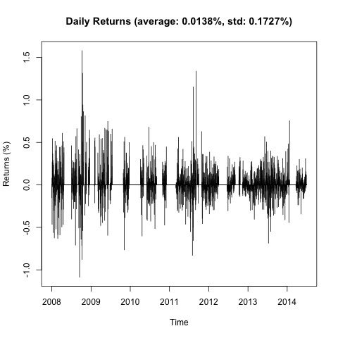
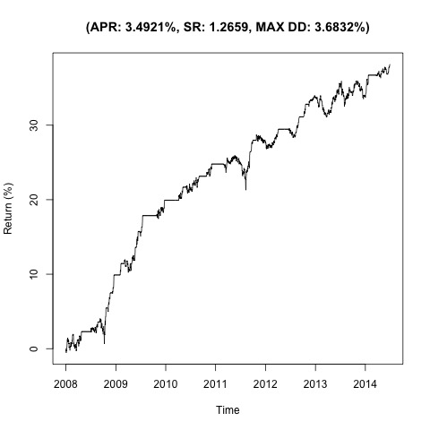

Johansen-Procedure
"" "10pct" "5pct" "1pct"
"r <= 3 |" 2.43 7.52 9.24 12.97
"r <= 2 |" 10.65 17.85 19.96 24.6
"r <= 1 |" 23.13 32 34.91 41.07
"r = 0 |" 52.39 49.65 53.12 60.16
"AUDUSD.l2" "EURUSD.l2" "CADUSD.l2" "CHFUSD.l2" "constant"
"AUDUSD.l2" 1 1 1 1 1
"EURUSD.l2" 0.06 2.63 381.72 -0.11 -0.84
"CADUSD.l2" -1.44 0.94 -910.15 0.45 -0.95
"CHFUSD.l2" -0.39 -1.54 562.53 0.36 1.33
"constant" 0.76 -3.77 -233.63 -1.69 -0.02
Augmented Dickey-Fuller Test
p-value
0.01





On 10000 leverage absulte return is $ 4335